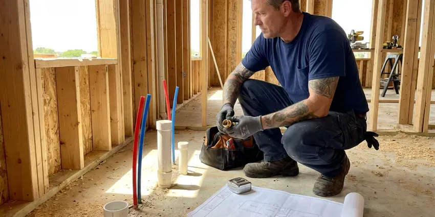

Drains Camera Inspection in Kenosha, WI
Find the exact cause of slow drains or backups in your Kenosha, WI home with our professional drains camera inspection.
- Above-Ground Problem Locating
- Skilled Plumbers
- No-Dig Inspections
- Skilled Plumbers

Get Expert Drain Diagnostics in Kenosha, WI.
Call HKV Plumbing today for reliable, non-invasive drain problem diagnosis.
Expert Drains Camera Inspection in Kenosha, WI for Clear Diagnosis
When you have recurring drain problems in your Kenosha, WI home, HKV Plumbing uses advanced drains camera inspection technology to find the root cause. This precise method helps us determine the best course of action, saving you time and money.
Our expertise includes:
- Locate lost items or debris within pipes.
- HD self-leveling camera inspection of 1.5 to 8 inch lines
- Recorded video and written findings for buyers and insurers

Additional Plumbing Maintenance Services in Kenosha, WI
Our maintenance and specialty plumbing services in Kenosha, WI protect your home year-round and extend the life of every system.


Customers
Why Choose HKV Plumbing for Drains Camera Inspection in Kenosha, WI?
Our team uses the latest camera technology so no issue goes missed, delivering peace of mind for your Kenosha, WI property.
- Cost Savings, By eliminating guesswork, we deliver targeted repairs, avoiding the expense of exploratory digging or ineffective treatments.
- Cost-Effective, By finding the exact problem, we can provide targeted repairs, saving you money on unnecessary work.
- Preventative Care, Inspecting your drains can catch minor issues before they turn into costly emergencies, especially where soil shifts and settles.
Citywide Coverage
Whether your cleanout is in the front yard, the garage or on the roof vent, we can get a camera in. We serve homeowners, buyers, landlords and businesses across Kenosha.
Experienced Team
The HKV Plumbing team has deep knowledge of drain line issues common in older homes, including those caused by shifting foundations or mineral buildup. We don't just inspect, we provide expert analysis and solutions.
Safety-First Approach
We adhere strictly to all local and state plumbing codes in Wisconsin, so our inspection processes and any later recommendations meet strict standards for safety and compliance.
Trusted Certified Kenosha Plumbing Services Professionals
At HKV Plumbing, we take pride in providing certified plumbing services throughout Kenosha, WI. Backed by recognized industry credentials, our experienced plumbers combine technical skill with genuine customer care. Whether it is repair, installation, or maintenance, we follow strict safety and quality standards to deliver long-lasting results you can trust.
Call Us Now PHCC Plumbing Contractor Recognition
PHCC Plumbing Contractor Recognition Better Business Bureau (BBB) Accreditation
Better Business Bureau (BBB) Accreditation Angi Certified Pro
Angi Certified Pro ISO 9001 Quality Management Certification
ISO 9001 Quality Management CertificationReliable Drains Camera Inspection Services in Kenosha, WI
Camera Inspection Cost vs. Exploratory Digging in Kenosha, WI
A camera inspection usually costs a few hundred dollars, while exploratory digging can run much higher and still miss the problem. With a camera and locator, we know where to dig and how deep before a shovel touches the ground. That keeps excavation small and restoration costs low. Many homeowners find the inspection pays for itself.

Hydro-Jetting Pre-Inspection in Kenosha, WI
Before performing hydro-jetting to clear severe clogs in Kenosha, WI, a drain camera inspection is often crucial. This pre-inspection allows us to assess the nature and location of the blockage, as well as the overall condition of the pipes. It tells us that hydro-jetting is the appropriate solution and that your pipes can withstand the high-pressure water, preventing further damage.
Pre-Purchase Plumbing Inspection in Kenosha
Before buying a home in Kenosha, especially one built on a slab foundation, a drains camera inspection can save you from unexpected plumbing nightmares. We can identify potential issues like corroded pipes, prior repairs, or developing leaks that may not be obvious during a standard home inspection. This proactive step provides peace of mind and can be a valuable negotiation tool.
Camera Inspection for Slab Leaks and Under-Slab Drains in Kenosha, WI
Wisconsin has a lot of older housing, and many homes still have cast iron drains, galvanized supply lines or clay sewer laterals. In slab homes, drains run under concrete where they cannot be seen. Cracked or separated under-slab drains can leak into the soil and contribute to foundation movement. A camera shows the location of the break and lets us plan the smallest possible access cut or a reroute. This avoids tearing up more flooring than needed.
Pre-Purchase Sewer Scope in Kenosha, WI
Standard home inspections usually do not include the sewer line, yet sewer repairs can cost thousands. A pre-purchase sewer scope shows the condition of the lateral before you close. Older homes with clay or Orangeburg pipe benefit most. Our findings can support repair requests or price negotiations with the seller.
Identifying Specific Pipe Damage in Kenosha
Our drain cameras are equipped to identify various types of pipe damage in Kenosha, including hairline cracks, full pipe fractures, pipe corrosion from hard water or age, and bellied pipes that collect debris. We can also detect foreign objects lodged in the system. Knowing the exact type of damage allows us to recommend targeted solutions, such as spot repairs, pipe lining, or full pipe replacement, minimizing disruption and cost.
Emergency Drain Camera Inspection in Kenosha, WI
When you have a sudden, severe drain backup or an overflowing toilet in Kenosha, WI, an emergency drain camera inspection can rapidly identify the cause. This allows for immediate, targeted action, preventing further water damage to your property. We put first emergency calls to get a camera into your lines as fast as possible.

Camera Inspections for Insurance and HOA Claims in Kenosha, WI
When a sewer backup or drain leak causes damage, insurers often want proof of the cause. Our recorded video and written findings document roots, breaks or blockages clearly. HOAs and property managers also use our reports to decide who is responsible for a shared line. We provide files in a format that is easy to share.
Drains Camera Inspection Near Me in Kenosha, WI
We understand the urgency when drain problems arise, which is why we strive to provide prompt and efficient service throughout the Kenosha area. Our goal is to offer convenient, high-quality drain camera inspections right in your neighborhood, providing clarity on your plumbing issues.
HKV Plumbing is your trusted local expert for drains camera inspection in the Kenosha area. We pride ourselves on providing prompt, professional service, so your plumbing problems are accurately identified and effectively resolved. Don't let recurring clogs frustrate you any longer, call us for a precise diagnosis.
HKV Plumbing at a Glance
- Licensed and insured plumbers serving Kenosha, WI
- 24/7 emergency service with same-day scheduling
- Upfront, flat-rate pricing before work begins
- 4.8-star rated by 448+ Wisconsin customers
Kenosha Map
Kenosha Information
- Population
- 98,211
- Area codes
- 262/414/847
- Service area
- Kenosha and communities within 40 miles
- Nearby
- Racine, West Allis, Waukesha, Milwaukee
Wisconsin has a lot of older housing, and many homes still have cast iron drains, galvanized supply lines or clay sewer laterals. With many sewer lines running through root-filled yards, a drain camera inspection is the fastest way to find hidden pipe damage in Kenosha, WI.
Expert Services
Trust our professionals for reliable HKV Plumbing solutions in Kenosha, WI.
Our Specialized Plumbing Services in Kenosha, WI
At HKV Plumbing, we provide a complete range of plumbing services across Kenosha, WI. From leak detection to full system installations, our team ensures fast, precise, and affordable service for both residential and commercial properties. Explore our core services below:


How Our Drains Camera Inspection Process Works in Kenosha, WI
Our drains camera inspection process is designed for efficiency and accuracy, providing you with a clear understanding of your plumbing system's condition.
Request a Quote
Reach HKV Plumbing by calling (414) 432-4641 to schedule your drains camera inspection. We'll discuss your symptoms and set up a convenient time for our technicians to visit your Kenosha property.
Camera Insertion
Our trained technician will insert a high-resolution, waterproof camera into your drain line, typically through an existing access point like a cleanout. The camera feeds live video to a monitor.
Thorough Inspection
We methodically guide the camera through your pipes, identifying any blockages, cracks, root intrusions, or other problems. The footage is recorded for detailed analysis.
Frequently Asked Questions About Drains Camera Inspection in Kenosha
The cost of a drains camera inspection in Kenosha, WI usually ranges from $200 to $500, depending on the complexity of the job, the length of the line, and whether it's a standalone service or part of a larger diagnostic. We provide a transparent quote before any work begins, so you understand the investment.
Typically, a preventative drain camera inspection is not covered by standard homeowner's insurance. However, if the inspection is performed as part of diagnosing damage already covered by your policy, such as a burst pipe, parts of the cost might be. It's best to check with your specific insurance provider.
Yes. We provide the recorded footage and a summary of findings. You can share them with buyers, sellers, insurers or other plumbers.
While primarily for inspecting the inside of pipes, many of our drain cameras are equipped with sondes (transmitters) that allow us to accurately pinpoint the camera's location underground. This can be very useful for locating septic tanks, leach fields, or hidden cleanouts when their exact position is unknown on your property in Kenosha.
Our drain camera inspection service itself is a diagnostic tool, so it doesn't carry a separate warranty on the service. However, any later repair work recommended and performed by HKV Plumbing will come with its own warranty, giving you confidence in our workmanship and parts.
Recurring clogs, slow drains in multiple fixtures, foul odors coming from drains, gurgling sounds from toilets or drains, and sewage backups are all strong signs that you could benefit from a drain camera inspection in Kenosha. These symptoms suggest a deeper issue that a camera can uncover.
The camera needs open pipe to travel. If the line is fully blocked, we clear it first and then inspect it. That also lets us see the cause of the clog.
We use professional-grade drain inspection cameras from trusted brands like RIDGID and Vivax-Metrotech. These cameras feature high-resolution imaging, self-leveling heads, and powerful LED lighting to provide clear visuals even in dark, wet conditions. They are also flexible enough to navigate different pipe diameters and bends.
What People Are Saying About Our Plumbing Experts?

Sofia M.
Two new toilets installed in one visit, no mess left behind, and the tech even adjusted a faucet he noticed was dripping. Fair pricing and really friendly.
Toilet Installation · Waukesha, WI
Robert G.
The trenchless sewer replacement saved our front yard. They walked us through the camera inspection footage first so we knew exactly what we were paying for.
Sewer Line Replacement · Wauwatosa, WIJames P.
Our commercial plumbing system had a leak under the sink, and HKV Plumbing handled it professionally. The plumbers arrived quickly and restored everything without disruption to our customers.
Commercial Plumbing · West Allis, WI
Daniel K.
A pipe burst at 11 pm and they actually answered. The plumber showed up within the hour, shut everything down, and had us back to normal the next morning. Could not ask for more.
Emergency Plumbing · Janesville, WI
Mark T.
When our office needed drain cleaning, HKV Plumbing provided quick, reliable service. The plumber arrived on time and made sure every drain flowed perfectly before leaving. Very satisfied.
Drain Cleaning · Racine, WI
Emily R.
I called HKV Plumbing for plumbing repair, and the technician was fast, polite, and thorough. They explained the problem clearly and fixed it the same day. I will definitely hire them again. Highly recommended!
Plumbing Repair · Kenosha, WI